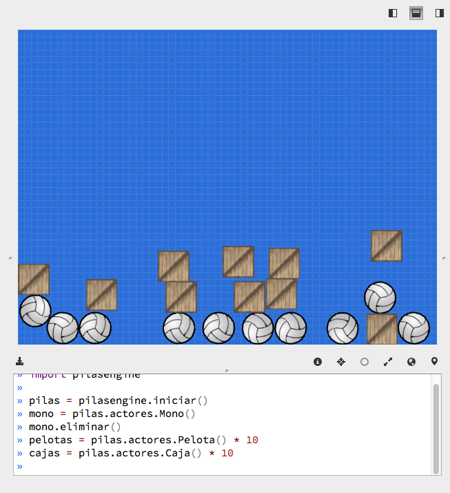
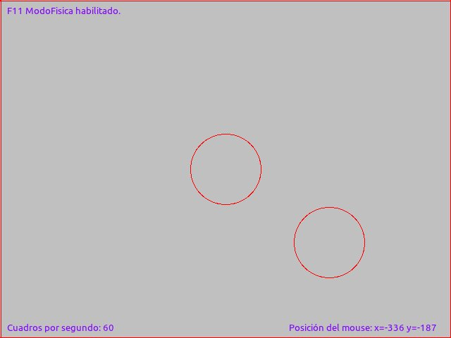
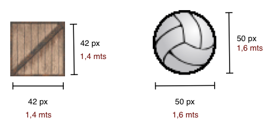

Física
Pilas incluye integración con un sistema de física para realizar simulaciones y dotar a tus juegos de mas realismo y diversión.
El motor: Box2D
El motor de física seleccionado para pilas se llama Box2D, el mismo motor de física utilizado en el juego Angry Birds.
Así, Box2D y PyBox2D son las bibliotecas protagonistas de casi toda la funcionalidad que vas a ver en este módulo.
El módulo pilas.fisica es solamente un facilitador para utilizar Box2D, y
que puedas comenzar a jugar con físicas rápidamente.
Así que aprovecho este espacio para dar las gracias a Erin Catto, y su grupo de desarrollo por haber creado Box2D.
Unos ejemplos
El motor de física se puede mostrar en funcionamiento usando un ejemplo, escribe el siguiente código:
pelotas = pilas.actores.Pelota() * 10
esto creará un grupo de circunferencias que rebotarán hasta la parte inferior de la pantalla.
De manera similar puedes crear un montón de cajas y hacerlas rebotar:
cajas = pilas.actores.Caja() * 10
Como puedes ver, el resultado es un grupo caótico de actores chocando entre sí. Mas adelante veremos como personalizar y "controlar" un poco el escenario.

Los actores que tienen física son un poco particulares, pero aún así se los puede tratar como a otros actores. Por ejemplo, si quieres poder arrastrar y soltar figuras con el mouse, puedes enseñarles una habilidad:
pelotas.aprender("arrastrable")
cajas.aprender("arrastrable")
Modo depuración de física
Cuando haces juegos con física o movimientos realistas es muy importante tener en cuenta un concepto importate:
Si bien uno observa pelotas y cajas, en realidad, internamente son solo cuadrados y circunferencias.
Lo que ocurre en pantalla son dos cosas, por una lado vemos imágenes con aspecto de caja o pelota, y por el otro se nos oculta una simulación entre polígonos mucho mas primitiva y simple.
Observa esta escena:

Cada uno de esos actores está asociado a una figura geométrica, la física en realidad se da en un nivel muy primitivo de figuras. El aspecto de las cosas es solo eso, un aspecto. Lo que "manda" en el comportamiento físico son las figuras geométricas (cuerpos).
Intenta lo siguiente, pulsa la tecla F11 y observarás varias lineas de color rojo indicando las figuras de los cuerpos:

Las lineas rojas indican polígonos que el motor de física puede controlar, las cajas tienen forma rectangular, los actores Pelota tienen figuras circulares, y el suelo y las paredes también están en el sistema de física.
Si por algún motivo quieres que los objetos no estén contenidos en la pantalla, y sean un poco mas libres, podrías eliminar las paredes:
pilas.fisica.eliminar_paredes()
o incluso podrías eliminar el suelo:
pilas.fisica.eliminar_suelo()
Pero recuerda que los objetos que no se ven en la pantalla de todas maneras estarán ahí. Una buena idea es eliminarlos ni bien los dejas de usar.
Física personalizada
Los actores Pelota y Caja están bien para simulaciones
simples y generales. Pero, ¿cómo podemos dotar a nuestros
propios actores de ese comportamiento?.
Los objetos o figuras físicas viven dentro del módulo de física y son invisibles (al principio), pero luego se pueden vincular a cualquier actor con facilidad.
Intenta lo siguiente, ingresa en el modo interactivo de pilas y pulsa la tecla F11. Tendrías que ver el texto "F11 ModoFisica habilitado." en la esquina superior de la ventana:

Ahora genera dos figuras físicas, una circunferencia estática y otra dinámica:
circulo = pilas.fisica.Circulo(0, 0, 50, dinamica=False)
circulo_dinamico = pilas.fisica.Circulo(10, 200, 50)
El primer círculo aparecerá en el centro de la ventana, y el
segundo comenzará en la posición (10, 200), es decir,
en la parte superior de la ventana y luego caerá
rebotando. Algo así:

Ahora bien, habrás notado que estas dos circunferencias las podemos ver porque está habilitado el módulo de depuración (que activamos con F11), pero esto no lo va a ver alguien que juegue a nuestro juego. El modo depuración es solo para desarrolladores.
Lo que nos falta hacer, es darles apariencia a esas figuras. Algo así como una piel..
Para esto podemos usar actores. La dinámica es así, tenemos que crear dos actores, y luego decirle a estos actores que se comporten cómo figuras geométricas.
Agreguemos a nuestro programa estas 4 lineas de código, queremos que el primer circulo (el del centro) sea un mono, y el otro círculo que sea una bomba:
mono = pilas.actores.Mono()
mono.aprender(pilas.habilidades.Imitar(circulo))
bomba = pilas.actores.Bomba()
bomba.aprender(pilas.habilidades.Imitar, circulo_dinamico)
Esto es diferente a lo anterior, los objetos físicos ahora tienen apariencia:

Ahora podríamos desactivar el modo depuración física (pulsando nuevamente F11) y jugar un poco impulsando la bomba de un lado a otro:
circulo_dinamico.y = 200
Ten en cuenta que ahora la figura del motor físico es la
que determina el movimiento y la rotación, así que ya no
funcionará escribir algo cómo bomba.y = 200, ahora tienes
que escribir circulo_dinamico.y = 200 para mover al actor...
Otra cosa a considerar, es que en nuestro ejemplo no ajustamos
muy bien el tamaño del circulo_dinamico con el de la
bomba. Esto es un detalle poco relevante aquí, porque solo
quiero explicar cómo se usa el motor, pero cuando hagas tus
juegos, recuerda usar el modo depuración de física para detectar
estos detalles y corregirlos, son muy importantes para que
tus usuarios disfruten del juego. Recuerda que ellos no
verán los círculos rojos... solo verán la apariencia
de los actores.
Escala real y tamaño de figuras
Pilas utiliza una pantalla que se puede medir en pixels, de hecho, todas las imágenes tienen un tamaño en pixels predefinido.
Pero dentro del mundo físico de box2d, las figuras no tienen tamaño en pixels sino en metros.
¿Cual es la relación?, pilas convierte pixels a metros para mantener al mundo de box2D en coherencia con lo que estamos viendo en pantalla.
30 pixels son equivalentes a 1 metro:

Cambiando la gravedad interactivamente
Por defecto, la gravedad del escenario es de (0, -90), esto significa que los objetos "caen" hacia abajo, y lo hacen con una aceleración de 90 mts/s^2 (metros sobre segundos cuadrados).
Pero no estás obligado a que esto sea siempre así, de hecho si quieres hacer un juego que transcurra en el espacio seguramente vas a querer eliminar por completo la gravedad del escenario para que los objetos puedan "flotar", ¿no?.
Entonces, hay dos formas de cambiar la gravedad del escenario. Podrías
cambiar la gravedad en cualquier momento invocando a la función
definir_gravedad indicando la nueva gravedad, por ejemplo:
pilas.fisica.definir_gravedad(200, 0)
o directamente especificar la gravedad usando las variables x e
y:
pilas.fisica.gravedad_x = 90
pilas.fisica.gravedad_y = 90
Ten en cuenta que el primer argumento es la aceleración horizontal y
la segunda componente es la aceleración vertical. Los valores originales
de la gravedad son 0 y -90.